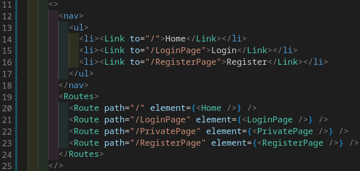
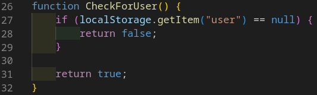
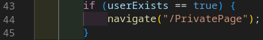

React Router er essentiel når det gælder udvikling af vores hjemmeside, da vi bruger flere sider, hvorpå brugeren kan navigere rundt. Når man logger ind på siden, bliver brugeren redirected til en privat side. Lige nu, er den private side åben. Da det mest af alt er prototype kode lige nu, så bruger hjemmesiden ikke nogen private router endnu. Under ses koden til registrering af gyldige sider. Fra linje 20 til 23 bliver siderne (React components) registreret.
På logindside, når man trykker på logind knappen, tjekker vi først om det er en bruger allerede logget ind på siden, ved at kigge i browserens local storage. Senere burde jeg nok tjekke om den data i local storage, stemmer op med dataen i loginformen.
Hvis der er en item i local storage som indeholder en bruger, så returnere true, og springer over alle API kald til microservicet og åbner den private side. Se billedet under.
